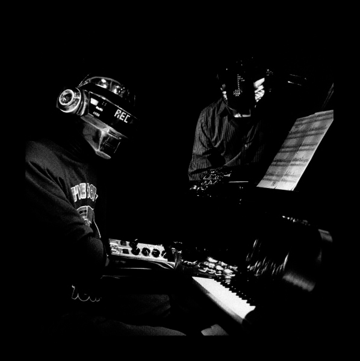

Discovery is the second studio album by the French electronic music duo Daft Punk, released on 12 March 2001 by Virgin Records. It marked a shift from the Chicago house style of their first album, Homework (1997), to a house style more inspired by disco, post-disco, garage house, and R&B. Thomas Bangalter of Daft Punk described Discovery as an exploration of song structures, musical forms, and childhood nostalgia, compared to the "raw" electronic music of Homework.
Discovery was recorded at Bangalter's home in Paris between 1998 and 2000. It features extensive sampling; some samples are from older records, while others were created by Daft Punk. The electronic musicians Romanthony, Todd Edwards, and DJ Sneak collaborated on some tracks. For the music videos, Daft Punk developed a concept that merged science fiction with the entertainment industry. Inspired by their childhood love for Japanese anime, the duo collaborated with Leiji Matsumoto to produce Interstella 5555: The 5tory of the 5ecret 5tar 5ystem, an anime film with Discovery as the soundtrack.
Before Discovery's release, Daft Punk adopted robot costumes. They also launched Daft Club, a website featuring exclusive tracks and bonus material. Discovery peaked high across several charts internationally on release. Critics praised Daft Punk for innovating in house music as they had done with Homework. The album produced six singles: "One More Time" was the most successful, becoming a club hit.
Discovery has continued to accumulate praise since being widely regarded as among the greatest albums of all time and credited with influencing electronic and pop production over subsequent decades. In 2020, Rolling Stone included it at number 236 in its updated list of "The 500 Greatest Albums of All Time".